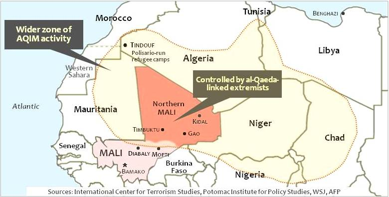
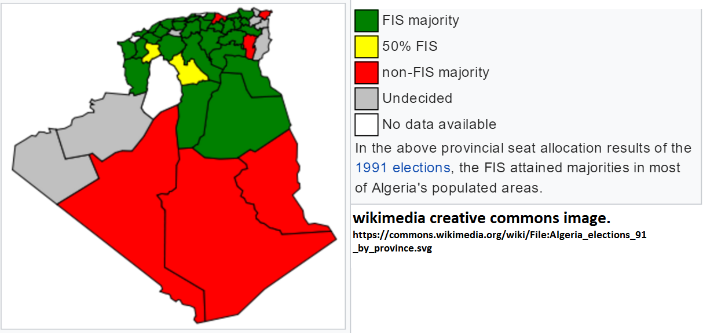

<!DOCTYPE html>
<html>
  <head>
    <title>Bloody Benefactors</title>
    <meta http-equiv="Content-Type" content="text/html; charset=UTF-8"/>
    <!-- This is template for http://remarkjs.com/ by Ole Petter Bang -->
    <!-- CSS modifcations by J. M. Lilly-->
      
    <style type="text/css">
      body { font-family: 'Georgia';letter-spacing:0.025em;}
      h1, h2, h3 {
        font-family: 'Georgia';
        font-weight: normal;
      }
      .remark-slide-content h1 { font-size: 2.4em; color:#606060;font-weight: bold;letter-spacing:0.05em;margin-top:0em}
      .remark-slide-content h2 { font-size: 1.55em;color:#606060;font-weight: bold;letter-spacing:0.05em;margin-top:0em}
      .remark-slide-content  h3 { font-size: 1.4em;color:#606060;font-weight: bold;letter-spacing:0.05em;margin-top:0em}
      .remark-slide-content p,ol,ul { font-size: 1.2em; }
      .remark-code, .remark-inline-code { font-family: 'Ubuntu Mono'; }
      .remark-fading { z-index: 9; } 
        
      /* Thanks to http://www.partage-it.com/animez-vos-presentations-remark-js/  (in French) */
/*      .remark-slide-container {transition: opacity 0.5s ease-out;opacity: 0;}
      .remark-visible {transition: opacity 0.5s ease-out;opacity: 1;}
  */      
      /* Two-column layout */
      .left-column {
        width: 50%;
        float: left;
      }
      .right-column {
        width: 49%;
        float: right;
        padding-top: 0em;
        margin-top: 0em;
        text-align: left;
      }    
      .footnote {  
        position:absolute;
        bottom: 1em;
        left: 14em;
        font-size: 0.7em;
       }
        
      /* Some special classes */
      .title {font-size: 3.3em; color:#606060;font-weight:bold;letter-spacing:0.05em}
      .subtitle {font-size: 1.4em}
      .author {font-size: 1.4em; color:#606060;font-weight:bold;letter-spacing:0.02em}  
      .coauthor {font-size: 1.0em; color:#606060;font-weight:bold;letter-spacing:0.02em}  
      .institution {font-size: 1.0em;}
      .date {font-size: 1.0em;font-style: italic}
    
      .cite {font-size: 0.8em; color:#33AA99;font-style: italic}
      .strike {color:salmon;text-decoration:line-through}
        
      /*Set color scheme for links.*/    
      a {text-decoration: none; color: #666666;text-align:center; width: 24%}
      /*Setting link properties is particular, do not change order below*/   
      a:visited {color:#666666}
      a:hover {color:#33AA99}  
      a:active, a#active {color:#FF9700;} 
    </style>
  </head>
  <body>
    <textarea id="source">
class: center, middle

.title[Bloody Benefactors:]     
.subtitle[Transregional Terrorist Group Sponsorship in Civil Wars]  
&nbsp;  
&nbsp;
&nbsp;              
&nbsp;              
&nbsp;              
.author[Laila A. Wahedi]  
.institution[Georgetown University]      
&nbsp;              
&nbsp;  
&nbsp;
.date[February 22, 2017]   
&nbsp;          
&nbsp;          
&nbsp;          
.center[]       
        
.footnote[Created with [{Remark.js}](http://remarkjs.com/) using [{Markdown}](https://daringfireball.net/projects/markdown/) +  [{MathJax}](https://www.mathjax.org/) + [{Liminal}](http://www.jmlilly.net/liminal.zip)]

---
class: center
#  Malian Civil War

.footnote[ Laila A. Wahedi -- Follow along at Wahedi.US, under Current Presentation -- law98@georgetown.edu]
---
class: center
#  Algerian Civil War

.footnote[ Laila A. Wahedi -- Follow along at Wahedi.US, under Current Presentation -- law98@georgetown.edu]
---
class: center, middle
# Transregional Groups: 
<h2 style="text-transform: none; margin-bottom:0px">Operate in more than one contiguous region/conflict</h2>
					
					<p><span style="color:green">&#10004</span> AQIM: Algeria, <i>and</i> Mali.</p>
					<p><span style="color:red">&#10008</span>PKK: Kurdistan, transnational not transregional</p>
					<p> <span style="color:red">&#10008</span>PFLP: Palestine/Lebanon, international allies, no presence</p>
.footnote[ Laila A. Wahedi -- Follow along at Wahedi.US, under Current Presentation -- law98@georgetown.edu]

---
class: middle
# Why do some groups form partnerships, but not others?
<br><br><br><br><br><br>
# Why do groups partner _when_ they do?
.footnote[ Laila A. Wahedi -- Follow along at Wahedi.US, under Current Presentation -- law98@georgetown.edu]
---

class: middle
# Who do transregional groups want to sponsor?
<br><br><br><br><br><br>
# Which local groups want sponsorship?
.footnote[ Laila A. Wahedi -- Follow along at Wahedi.US, under Current Presentation -- law98@georgetown.edu]

---
class: left, middle, two-columns
# Asset Specificity: Partnerships are efficient
<h2 style="text-transform: none; margin-bottom:0px">Groups are good at different things</h2>
	
.left-column[

&nbsp;
### Local Groups
* Local Infrastructure
	* Local Networks
	* Local legitimacy
	* Territory
	
]
.right-column[
&nbsp;
### Transregional Groups
* Local Infrastructure
	* Donor Networks
	* Training, intelligence
	* Global legitimacy 	
]
.footnote[ Laila A. Wahedi -- Follow along at Wahedi.US, under Current Presentation -- law98@georgetown.edu]
---
class: center, middle
<h2 style="margin-bottom:0px; padding:0px" align="left">Who Transregional Groups Want:</h2>
	
	<div>
	<br>
	<br>
	<div style="width:32%; float:left; background-color:#d4e7fe; border:3px; border-style:solid; border-color: black;">
	<h4 align="left" style="margin-bottom:0px; margin-left:3px;">Ideologues</h4>
		
	<p style="color:red; clear:both">&#10008</p>
	</div>
	<div style="width:32%; float:left; background-color:#d4e7fe; border:3px; border-style:solid; border-color: black;">
		<h4 align="left" style="margin-bottom:0px; margin-left:3px;">Weak Groups</h4>
		
	<p style="color:red; clear:both">&#10008</p>
	</div>
	<div style="width:32%; float:left; background-color:#d4e7fe; border:3px; border-style:solid; border-color: black;">
		<h4 align="left" style="margin-bottom:0px; margin-left:3px;">Strong Groups</h4>
		
	<p style="color:green; clear:both">&#10004 </p>
	</div>
	</div>
	.footnote[ Laila A. Wahedi -- Follow along at Wahedi.US, under Current Presentation -- law98@georgetown.edu]

---
class: middle
<h2 style="margin-bottom:0px; padding:0px" align="left">Strong Local Groups</h2>
	
	<br>

* Prefer autonomy
* Have what they need
.footnote[ Laila A. Wahedi -- Follow along at Wahedi.US, under Current Presentation -- law98@georgetown.edu]
---
class: left, middle, two-columns
<h2 style="text-transform: none; margin-bottom:0px">Tension: Transregional groups want strong partners, but strong groups prefer autonomy </h2>
	

.left-column[
### Transregional Groups:
* Want:
	* Territory
	* Influence
* Offer:
	* Donor networks
	*Intel/training
	*Legitimacy
]
.right-column[
### Local Groups
* Want:
	* Sovereignty/autonomy
	* Resources
	* Legitimacy
* Offer:
	* Local infrastructure
	* Territory
]

## Partner When: strong local group under threat or in decline
.footnote[ Laila A. Wahedi -- Follow along at Wahedi.US, under Current Presentation -- law98@georgetown.edu]
---
class: center
#  Algerian Civil War

.footnote[ Laila A. Wahedi -- Follow along at Wahedi.US, under Current Presentation -- law98@georgetown.edu]
---


    </textarea>
    <!-- This is the link to the local copy of Remark -->
    <script src="../javascript/remark-latest.min.js" type="text/javascript"></script>
    <!-- See discussion at https://github.com/gnab/remark/issues/222-->
    <!-- You could alternately use the libraries from remote location -->
    <!--<script src="https://gnab.github.io/remark/downloads/remark-latest.min.js" type="text/javascript"></script>-->
      
    <!-- This is the link to the remote MathJax libraries --> 
    <script src="http://cdn.mathjax.org/mathjax/latest/MathJax.js?config=TeX-AMS_HTML&delayStartupUntil=configured" type="text/javascript"></script> 
    <!-- If you want to run your presentation offline, you need to download the MathJax -->
    <!-- libraries, then uncomment the line below and comment out the one above.-->
    <!--<script src="../javascript/MathJax/MathJax.js?config=TeX-AMS_HTML&delayStartupUntil=configured,local/local" type="text/javascript"></script> -->
    <!-- Note: see comment at http://stackoverflow.com/questions/19208536/mathjax-not-working-if-loaded-from-local-js-file-or-if-the-source-code-is-includ-->
      
    <script type="text/javascript"> 
      var slideshow = remark.create({navigation: {click: false}, properties: {class: "center, middle"}});

      // Setup MathJax
      MathJax.Hub.Config({
          tex2jax: {
          skipTags: ['script', 'noscript', 'style', 'textarea', 'pre']
          }
      });
      MathJax.Hub.Queue(function() {
          $(MathJax.Hub.getAllJax()).map(function(index, elem) {
              return(elem.SourceElement());
          }).parent().addClass('has-jax');
      });

      MathJax.Hub.Configured();
    </script>
  </body>
</html>